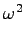

Next: 7.35 'Wrong degeneracy' error
Up: 7 Troubleshooting
Previous: 7.33 ph.x does not
Contents
Possible reasons
- if this happens only for acoustic modes at q = 0
that should
have
 = 0
: Acoustic Sum Rule violation, see the item before
this one
= 0
: Acoustic Sum Rule violation, see the item before
this one
- wrong data file read.
- wrong atomic masses given in input will yield wrong frequencies
(but the content of file fildyn should be valid, since the force
constants, not the dynamical matrix, are written to file).
- convergence threshold for either SCF (conv_thr) or phonon
calculation (tr2_ph) too large: try to reduce them.
- maybe your system does have negative or strange phonon
frequencies, with the approximations you used. A negative frequency
signals a mechanical instability of the chosen structure. Check that
the structure is reasonable, and check the following parameters:
- The cutoff for wavefunctions, ecutwfc
- For US PP: the cutoff for the charge density, ecutrho
- The k-point grid, especially for metallic systems!
Note that "negative" frequencies are actually imaginary: the negative
sign flags eigenvalues of the dynamical matrix for which
 < 0
.
Next: 7.35 'Wrong degeneracy' error
Up: 7 Troubleshooting
Previous: 7.33 ph.x does not
Contents
Paolo Giannozzi
2009-07-19